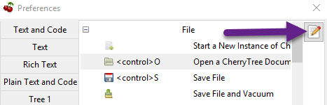
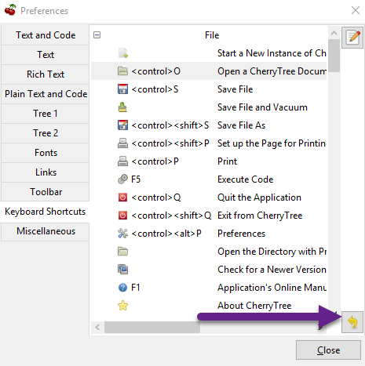

Index
- Images
- Tables
- Codebox
- Files
- Links
- Anchors
- Table of Contents
- Timestamps
- Special Characters
- Horizontal Rule
Keyboard Shortcuts
Keyboard Shortcuts
The keyboard Shortcuts preferences menu provides configuration options for shortcuts to Cherrytree’s features.
Editing a Keyboard Shortcut
1. Select a shortcut to edit.
2. Click the edit shortcut button to display the Edit Keyboard Shortcut menu.
Figure 9.16

3. Select No Keyboard Shortcut to remove a shortcut. Alternatively, toggle any of the three options: control, shift, and alt, and add one or more keys to the adjacent form to define the keyboard shortcut.
4. Click OK to complete the edit.
Reset Keyboard Shortcuts Settings
Click the yellow return button to return to Cherrytree’s default shortcut settings.
Figure 9.17

Default Keyboard Shortcuts
| Key | Value |
|---|---|
| Start a New Instance of Cherrytree | |
| Ctrl+O | Open a New Cherrytree Document |
| Ctrl+S | Save File |
| Save File and Vacuum | |
| Ctrl+Shift+S | Save File As |
| Ctrl+Shift+P | Set up the Page for Printing |
| Ctrl+P | |
| F5 | Execute Code |
| Ctrl+Q | Quit Application |
| Ctrl+Shift+Q | Exit from Cherrytree |
| Ctrl-Alt-P | Preferences |
| Open The Directory with Preferences Files | |
| Check for a Newer Version | |
| F1 | Application’s Online Manual |
| About Cherrytree | |
| Ctrl+N | Add a Node having the Same Parent of the Selected Node |
| Ctrl+Shift+N | Add a Child Node to the Selected Node |
| Ctrl+Shift+D | Duplicate the Selected Node |
| F8 | Insert a Node with Hierarchy Year/Month/Day |
| Sort the Tree Ascending | |
| Sort the Tree Descending | |
| Sort all the Siblings of the Selected Node Ascending | |
| Sort all the Siblings of the Selected Node Descending | |
| F2 | Edit the Properties of the Selected Node |
| Ctrl+Alt+R | Toggle the Read Only Property of the Selected Node |
| Change the Selected Node’s Children Syntax Highlighting to the Parent’s Syntax Highlighting | |
| Tree Summary Information | |
| Ctrl+Shift+B | Add the Current to the Bookmarks List |
| Ctrl+Alt+B | Remove the Current Node from the Bookmarks List |
| Ctrl+Z | Undo Last Operation |
| Ctrl+Y | Redo Previously Discarded Operation |
| Ctrl+Alt+I | Insert an Image |
| Ctrl+Alt+T | Insert a Table |
| Ctrl+Alt+C | Insert a CodeBox |
| Ctrl+Alt+E | Insert a File |
| Ctrl+L | Insert a Link/Edit the Underlying Link |
| Ctrl+Alt+A | Insert an Anchor |
| Insert Table of Contents | |
| Ctrl+Alt+M | Insert Timestamp |
| Ctrl+R | Insert Horizontal Rule |
| Ctrl+W | Lower the Case of the Selection/ the Underlying Word |
| Ctrl+Shift+W | Upper the Case of the Selection/ the Underlying Word |
| Ctrl+G | Toggle the Case of the Selection/ the Underlying Word |
| Strip Trailing Spaces | |
| Ctrl+Alt+S | Toggle Enable/Disable Spell Check |
| Ctrl+Shift+X | Cut as Plain Text, Discard the Rich Text Formatting |
| Ctrl+Shift+C | Copy as Plain Text, Discard the Rich Text Formatting |
| Ctrl+Shift+V | Paste as Plain Text, Discard the Rich Text Formatting |
| Shift+Alt+X | Cut the Current Row/Selected Rows |
| Shift+Alt+C | Copy the Current Row/Selected Rows |
| Ctrl+K | Delete the Current Row/Selected Rows |
| Ctrl+D | Duplicate the Current Row/Selected Rows |
| Alt+Up | Move Up the Current Row/Selected Rows |
| Alt+Down | Move Down the Current Row/Selected Rows |
| Shift+Alt+F | Change the Color of the Selected Text Foreground |
| Shift+Alt+B | Change the Color of the Selected Text Background |
| Ctrl+B | Toggle Bold Property of the Selected Text |
| Ctrl+I | Toggle Italic Property of the Selected Text |
| Ctrl+U | Toggle Underline Property of the Selected Text |
| Ctrl+E | Toggle Strikethrough Property of the Selected Text |
| Ctrl+1 | Toggle h1 Property of the Selected Text |
| Ctrl+2 | Toggle h2 Property of the Selected Text |
| Ctrl+3 | Toggle h3 Property of the Selected Text |
| Ctrl+0 | Toggle Small Property of the Selected Text |
| Ctrl+M | Toggle Superscript Property of the Selected Text |
| Toggle Subscript Property of the Selected Text | |
| Toggle Monospace Property of the Selected Text | |
| Justify Left the Current Paragraph | |
| Justify Center the Current Paragraph | |
| Justify Right the Current Paragraph | |
| Justify Fill the Current Paragraph | |
| Ctrl+Alt+1 | Set/Unset the Current Paragraph/Selection as a Bulleted List |
| Ctrl+Alt+2 | Set/Unset the Current Paragraph/Selection as a Numbered List |
| Ctrl+Alt+3 | Set/Unset the Current Paragraph/Selection as a To-Do List |
| F7 | Memory of Latest Text Format Type |
| Ctrl+Shift+R | Remove the Formatting from the Selected Text |
| Ctrl+F | Find into the Selected Node Content |
| Ctrl+Shift+F | Find into All the Tree Nodes Contents |
| Ctrl+Alt+F | Find into the Selected Node and Subnodes Contents |
| Ctrl+T | Find in Nodes names and Tags |
| F3 | Iterate the Last Find Operation |
| F4 | Iterate the Last Find Operation in Opposite Direction |
| Ctrl+H | Replace into the Selected Node Content |
| Ctrl+Shift+H | Replace into All Tree Nodes Contents |
| Ctrl+Alt+H | Replace into the Selected Node and Subnodes Contents |
| Ctrl+Shift+T | Replace in Nodes Names |
| F6 | Iterate the Last Replace Option |
| Ctrl+Shift+A | Show Search All Matches Dialog |
| F9 | Toggle Show/Hide Tree |
| Toggle Show/Hide Toolbar | |
| Toggle Show/Hide Node Name Header | |
| Ctrl+Tab | Toggle Focus Between Tree and Text |
| Ctrl+Shift+E | Expand All the Tree Nodes |
| Ctrl+Shift+L | Collapse All the Tree Nodes |
| Increase the Size of the Toolbar Icons | |
| Decrease the Size of the Toolbar Icons | |
| F11 | Toggle Full Screen On/Off |
| Export to PDF | |
| Export to HTML | |
| Export to Multiple Plain Text Files | |
| Export to Single Plain Text File | |
| Export to Cherrytree Document | |
| Add Nodes of Cherrytree File to the Current Tree | |
| Add Nodes from a Plain Text File to the Current Tree | |
| Add Nodes from a Folder of Plain Text Files to the Current Tree | |
| Add Nodes from an HTML File to the Current Tree | |
| Add Nodes from a Folder of HTML Files to the Current Tree | |
| Add Nodes from Basket Folder to the Current Tree | |
| Add Nodes from an EssentialPIM HTML File to the Current Tree | |
| Add Nodes of a Gnote Folder to the Current Tree | |
| Add Nodes of a KeepNote Folder to the Current Tree | |
| Add Nodes of a KeyNote Folder to the Current Tree | |
| Add Nodes of a Knowit File to the Current Tree | |
| Add Nodes of a Leo File to the Current Tree | |
| Add Nodes of a Mempad File to the Current Tree | |
| Add Nodes of a NoteCase File to the Current Tree | |
| Add Nodes of a RedNotebook Folder to the Current Tree | |
| Add Nodes of a Tomboy Folder to the Current Tree | |
| Add Nodes of a Treepad File to the Current Tree | |
| Add Nodes of a TuxCards File to the Current Tree | |
| Add Nodes of a Zim Folder to the Current Tree |